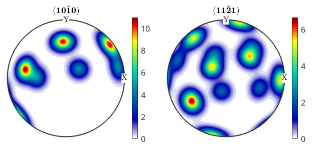
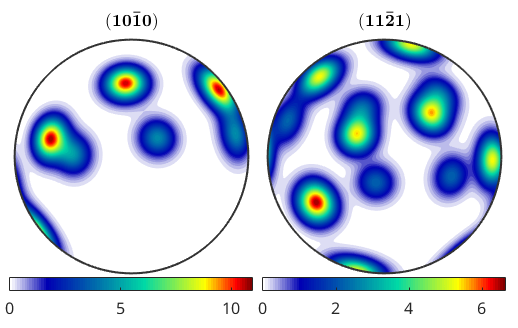
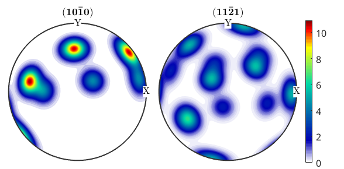
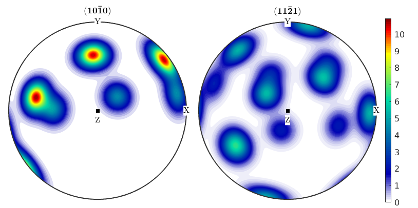
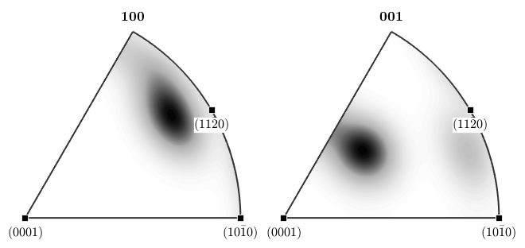
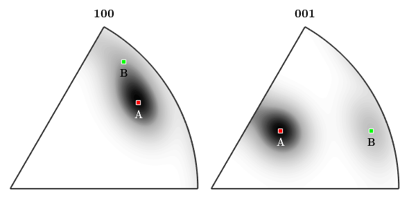
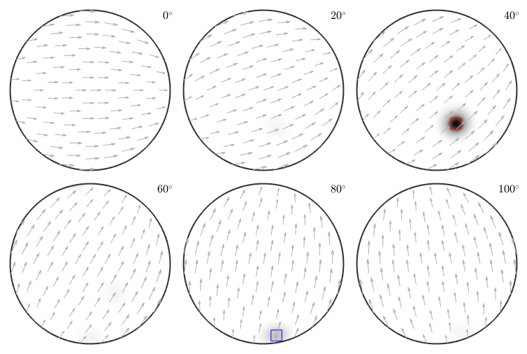
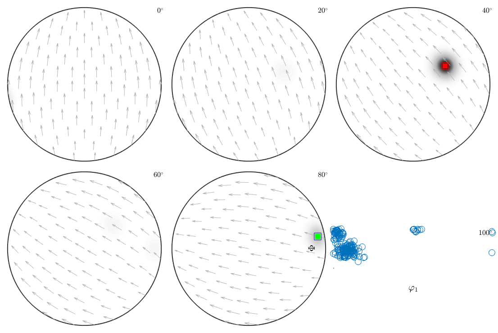
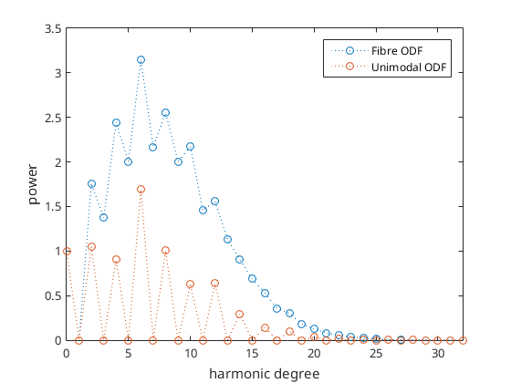

Annotations
Explains how to add annotations to plots. This includes colorbars, legends, specimen directions and crystal directions.
| On this page ... |
| Some sample ODFs |
| Adding a Colorbar |
| Adding Specimen and Crystal Directions |
| Adding Preferred Orientations |
| Adding a Legend |
Some sample ODFs
Let us first define some model ODFs to be plotted later on.
cs = crystalSymmetry('-3m'); mod1 = orientation('Euler',30*degree,40*degree,10*degree,cs); mod2 = orientation('Euler',10*degree,80*degree,70*degree,cs); odf = 0.7*unimodalODF(mod1) + 0.3*unimodalODF(mod2)
odf = ODF
crystal symmetry : -3m1, X||a*, Y||b, Z||c
specimen symmetry: 1
Radially symmetric portion:
kernel: de la Vallee Poussin, halfwidth 10°
center: (30°,40°,10°)
weight: 0.7
Radially symmetric portion:
kernel: de la Vallee Poussin, halfwidth 10°
center: (10°,80°,70°)
weight: 0.3
Adding a Colorbar
Adding colorbars is done by using the command colorbar.
plotPDF(odf,[Miller(1,0,0,cs),Miller(1,1,1,cs)],'antipodal')
colorbar Executing the command colorbar twice deletes the colorbar. You can also have a horizontal colorbar at the bottom of the figure using the option south.
colorbar % delete vertical colorbar colorbar('location','southOutSide') % add horizontal colorbars
If color range is equal in all plots of one figure only one colorbar is added (see. Color Coding).
colorbar % delete colorbar CLim(gcm,'equal'); % set equal color range to all plots colorbar % create a new colorbar
Adding Specimen and Crystal Directions
Pole figures and inverse pole figures are much more readable if they include specimen or crystal directions. Using the MTEX command annotate one can easily add specimen coordinate axes to a pole figure plot.
annotate([xvector,yvector,zvector],'label',{'X','Y','Z'},'BackgroundColor','w')
The command annotate allows also to plot crystal directions to inverse pole figures.
plotIPDF(odf,[xvector,zvector],'antipodal','marginx',10,'minmax','off') mtexColorMap white2black annotate([Miller(1,0,0,cs),Miller(1,1,0,cs),Miller(0,0,1,cs),Miller(2,-1,0,cs)],... 'all','labeled','BackgroundColor','w')
Adding Preferred Orientations
One can also mark specific orientations in the pole figures or in the inverse pole figures
plotIPDF(odf,[xvector,zvector],'antipodal') mtexColorMap white2black annotate(mod1,... 'marker','s','MarkerSize',6,'MarkerFaceColor','r',... 'label','A','color','w') annotate(mod2,... 'marker','s','MarkerSize',6,'MarkerFaceColor','g',... 'label','B') drawNow(gcm,'figSize','normal')
as well as in ODF plots
plot(odf,'sections',18,'sigma') mtexColorMap white2black annotate(mod1,... 'MarkerSize',15,'MarkerEdgeColor','r','MarkerFaceColor','none') annotate(mod2,... 'MarkerSize',15,'MarkerEdgeColor','b','MarkerFaceColor','none')
Plotting ODF as sigma sections, range: 0° - 113°
or orientation scatter plots
ori = calcOrientations(odf,200); scatter(ori,'center',mod1); annotate(mod1,... 'MarkerSize',10,'MarkerEdgeColor','r','MarkerFaceColor','r') annotate(mod2,... 'MarkerSize',10,'MarkerEdgeColor','g','MarkerFaceColor','g')
Adding a Legend
If you have multiple data in one plot then it makes sense to add a legend saying which color / symbol correspond to which data set.
The following example compares the Fourier coefficients of the fibre ODF with the Fourier co,'margin'}efficients of an unimodal ODF.
close all plotFourier(FourierODF(odf,32)) hold all fodf = fibreODF(Miller(1,0,0,cs),zvector); plotFourier(FourierODF(fodf,32)); hold off legend({'Fibre ODF','Unimodal ODF'})
Adding a Spherical Grid
Sometimes it is usefull to have a spherical grid in your plot to make the projection easier to understand or if you need to know some angular relationships. For this reason there is the option grid, which enables the grid and the option grid_res, which allows to specifiy the spacing of the grid lines.
plotPDF(odf,[Miller(1,0,0,cs),Miller(0,0,1,cs)],'grid','grid_res',15*degree,'antipodal'); mtexColorMap white2black

| DocHelp 0.1 beta |